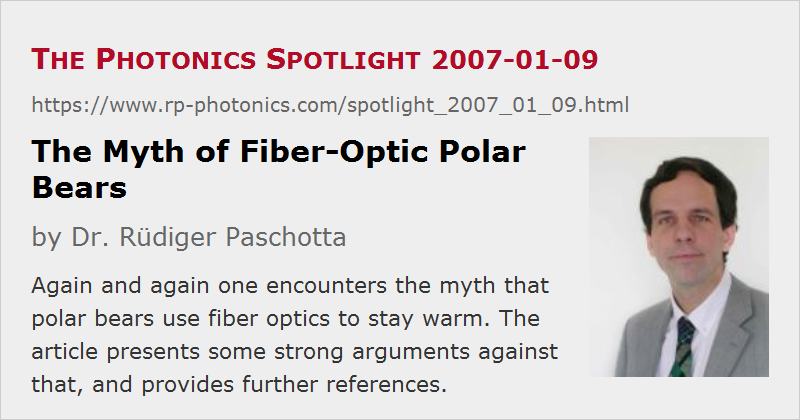

The Myth of Fiber-Optic Polar Bears
Posted on 2007-01-09 (revised on 2011-05-09) as a part of the Photonics Spotlight (available as e-mail newsletter!)
Permanent link: https://www.rp-photonics.com/spotlight_2007_01_09.html
Author: Dr. Rüdiger Paschotta, RP Photonics Consulting GmbH
Abstract: Again and again one encounters the myth that polar bears use fiber optics to stay warm. The article presents some strong arguments against that, and provides further references.

Ref.: R. E. Grojean et al., “Utilization of solar radiation by polar animals: an optical model for pelts; an alternative explanation”, Appl. Opt. 19 (3), 339 (1980); MTW, 2007-01-04 (Swiss television SF 1); W wie Wissen (German television ARD), 2006-02-16; article on Daniel W. Koon's homepage with many more references and clarifying remarks
Certain ideas, however wrong they may be, can be found to survive over astonishingly long periods of time, since they are copied again and again if they somehow appear appealing. In the context of photonics, one of those is the myth of fiber-optic polar bears. Recently, I encountered that once again in Swiss television, and the same was reported about a year earlier in Germany – see the links given above.
The idea comes in variations, but essentially it says that the polar bear's hair have the ability to guide sunlight down to the skin, where it is absorbed and thus converted into heat. The hairs are assumed to act as optical fibers. This sounds ingenious indeed and seems to make it a little easier to understand how these animals can survive under such harsh conditions.
The trouble is only that this trick can never work – essentially because it is impossible for hair (or any other fibers, for that matter) to efficiently collect light from a wide range of directions and then transport it along its axis. Fundamental entropy considerations reveal this. Consider a light beam, coming from some arbitrary direction, hitting a fiber at one point and being redirected to propagate along the fiber from that point on. (This is exactly what is shown in some TV programs and on some websites.) If that were possible, the same would hold for the time-reversed process: light launched into the fiber end would at one point decide to change direction and leave the fiber! But the light wouldn't even “know” exactly where to do this trick, and in which direction to go, since allegedly the original process should be possible for a wide range of beam directions and points on the fiber. So the fiber might either exhibit strong scattering, so that it can in principle collect some light from all directions, but then lose it via scattering. Or it could only weakly scatter and then receive light only from the tiny end. In no case, it could efficiently collect light and transport it in a certain direction only. In technical terms, this would mean to drastically reduce the entropy (which is of course forbidden by thermodynamic principles): concentrate light, which originally propagates in many modes, to one or a few modes.
Moreover, the polar bear's fur is known to scatter most of any visible incident light in all directions, and the same applies to infrared light. Okay, some people claim it is the ultraviolet light which does the heating, but that transports only a minor part of the energy of the sunlight. Anyway, hair strongly absorbs UV light (as well as visible light), rather than guiding it.
What is of course possible is that some light somehow gets to the dark skin by propagating in the air between the hairs. But this will also not be very effective, and is not a fiber-optic trick anyway.
By the way, concentrating light into fewer modes is possible in some situations where the reduction of entropy is somehow compensated. This is the case for lasers acting as brightness converters. So if some clever polar bears happen to read the Photonics Spotlight, they may next dope their hair with some laser-active species, hoping to get it lase under illumination with sunlight, so that at least some considerable fraction of its energy can find its way to the skin. In the case that this happens, you will read about it at this place.
This article is a posting of the Photonics Spotlight, authored by Dr. Rüdiger Paschotta. You may link to this page and cite it, because its location is permanent. See also the RP Photonics Encyclopedia.
Note that you can also receive the articles in the form of a newsletter or with an RSS feed.
Questions and Comments from Users
Here you can submit questions and comments. As far as they get accepted by the author, they will appear above this paragraph together with the author’s answer. The author will decide on acceptance based on certain criteria. Essentially, the issue must be of sufficiently broad interest.
Please do not enter personal data here; we would otherwise delete it soon. (See also our privacy declaration.) If you wish to receive personal feedback or consultancy from the author, please contact him e.g. via e-mail.
By submitting the information, you give your consent to the potential publication of your inputs on our website according to our rules. (If you later retract your consent, we will delete those inputs.) As your inputs are first reviewed by the author, they may be published with some delay.
|  |
If you like this page, please share the link with your friends and colleagues, e.g. via social media:
These sharing buttons are implemented in a privacy-friendly way!